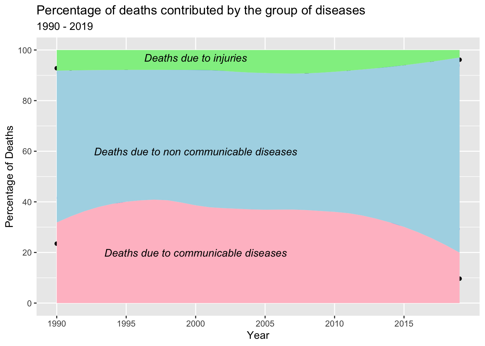
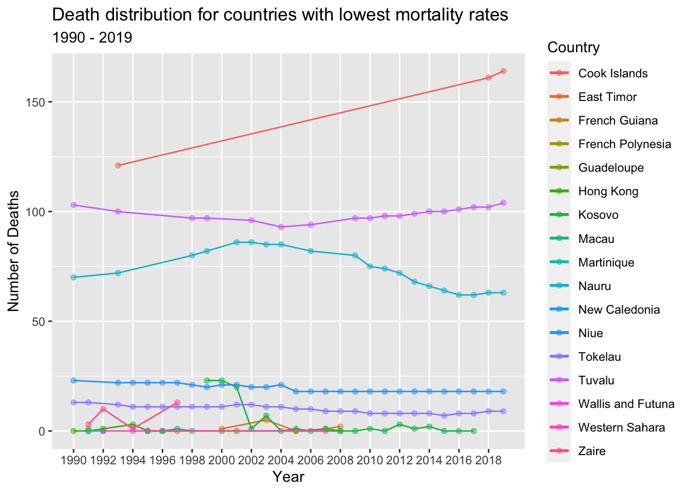
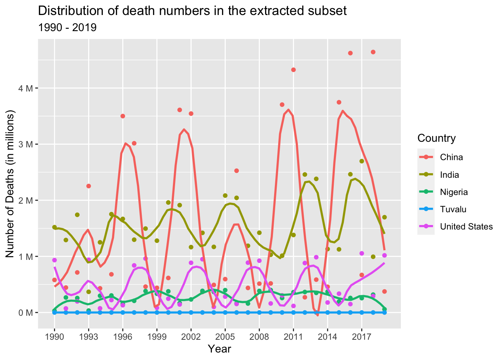

library(tidyverse)
library(tidyr)
library(dplyr)
library(scales)
library(ggplot2)
library(janitor)
library(rworldmap)
knitr::opts_chunk$set(echo = TRUE, warning=FALSE, message=FALSE)Final Project: Neha Jhurani
final_project
Project
Part 1. Introduction
The main goal of this project is to identify the key causes that have had the greatest impact on global mortality rates from 1990 to 2019.
General Research Question: What is the leading cause of death across the world (including people from all demographics)? How did the causes of death change over time and differ between different countries and world regions?
Dataset Description: Our analysis relies on data obtained from The Global Burden of Disease, a comprehensive worldwide study that provides information on the annual number of deaths at the country level spanning the years 1990 to 2019. The dataset captures a broad spectrum of causes of death, encompassing communicable and non-communicable diseases, and injuries that contribute to mortality rates. Each row in the dataset corresponds to the annual deaths recorded for a specific country and cause for the mentioned year. It covers the entire demographic spectrum, enabling us to examine mortality trends across various population groups. By utilizing this extensive dataset, we can gain valuable insights into the factors influencing global mortality and explore how they have evolved over time.
Unit of Analysis: Each row in the dataset represents the annual death numbers for the specific country during the mentioned year from the specified cause or disease. The dataset includes data for all people irrespective of their demographic characteristics.
Part 2. Literature Review
The Global Burden of Disease (GBD) initiative, launched by the World Health Organization (WHO) in collaboration with the World Bank and the Harvard School of Public Health, is a comprehensive effort to analyze and quantify the impact of diseases, injuries, and risk factors on global health. The causes of death dataset derived from this initiative provides valuable insights into global mortality patterns, enabling us to identify the leading causes of death and their distribution across different regions.
By understanding the specific causes of death, policymakers and public health professionals can prioritize interventions and allocate resources effectively. The dataset facilitates cross-country comparisons, revealing variations in causes of death and highlighting disparities in health outcomes. It serves as a vital tool for identifying successful interventions in specific regions and promoting best practices globally.
Moreover, the causes of death dataset from the GBD initiative not only helps in generating a better understanding of the burden of diseases but also serves as a powerful advocacy tool. It aids in mobilizing resources, generating public support, and driving political action towards addressing the identified health issues. The dataset’s comprehensive and rigorous assessment of global health burdens contributes to evidence-based decision-making and supports efforts to improve health outcomes worldwide.
Part 3. Dataset Introduction
The Global Burden of Disease is a major global study on the causes of death and disease published in the medical journal The Lancet. The dataset represents data for all demographic people from the year 1990 to 2019 as mentioned on their website. We extract our data from this source.
The dataset includes data on country level. Every row in the dataset mentions the annual death numbers attributed to each of the cause for the specified country during the mentioned year.
Part 4. Dataset Description
The dataset contains data for all countries (globally) across time period 1990 to 2019. It has 200,772 rows and 6 columns, i.e., it covers a wide range of causes of death for various countries from the year 1990 to 2019.
Exploring the variables present in the dataset:
Causes name - This represents the cause of death. This can be a disease or a natural phenomena or a legal action
Causes Full Description - This represents if the death is in all age groups or in a particular set of age groups, and weather it is in all the genders or in specific gender. In the dataset that we are using, we can see that all the data is mentioned for all ages and genders.
Death Numbers - This represents the annual number of deaths for specific value of cause, year and country
Entity - This represents the name of the country in which the deaths occurred.
Code - This represents the ISO Code of the country in which deaths occurred
Year - This represents the year in which the deaths occurred.
Coding Component:
library(readr)
death_dataset <- read_csv("NehaJhurani_FinalProjectData/CausesOfDeath.csv")
#Dimensions of Global Death Dataset
dim(death_dataset)[1] 200772 6#Columns of death dataset
colnames(death_dataset)[1] "Causes name" "Causes Full Description"
[3] "Death Numbers" "Entity"
[5] "Code" "Year" #Viewing first few rows of the dataset
head(death_dataset)#summary of each of the columns in the dataset
summary(death_dataset) Causes name Causes Full Description Death Numbers
Length:200772 Length:200772 Min. : 0
Class :character Class :character 1st Qu.: 14
Mode :character Mode :character Median : 209
Mean : 7712
3rd Qu.: 1860
Max. :4584273
NA's :11127
Entity Code Year
Length:200772 Length:200772 Min. :1990
Class :character Class :character 1st Qu.:1997
Mode :character Mode :character Median :2004
Mean :2004
3rd Qu.:2012
Max. :2019
The mean number of annual deaths across countries during the years 1990 to 2019 is around 7712. We can also see that there are 11,127 NAs in Death Numbers. We will further analyze the statistics in the data preprocessing section.
#different causes of death included in the dataset
unique(death_dataset$'Causes name') [1] "Meningitis"
[2] "Neoplasms"
[3] "Fire, heat, and hot substances"
[4] "Malaria"
[5] "Drowning"
[6] "Interpersonal violence"
[7] "HIV/AIDS"
[8] "Drug use disorders"
[9] "Tuberculosis"
[10] "Road injuries"
[11] "Maternal disorders"
[12] "Lower respiratory infections"
[13] "Neonatal disorders"
[14] "Alcohol use disorders"
[15] "Exposure to forces of nature"
[16] "Diarrheal diseases"
[17] "Environmental heat and cold exposure"
[18] "Nutritional deficiencies"
[19] "Self-harm"
[20] "Conflict and terrorism"
[21] "Diabetes mellitus"
[22] "Poisonings"
[23] "Protein-energy malnutrition"
[24] "Terrorism (deaths)"
[25] "Cardiovascular diseases"
[26] "Chronic kidney disease"
[27] "Chronic respiratory diseases"
[28] "Cirrhosis and other chronic liver diseases"
[29] "Digestive diseases"
[30] "Acute hepatitis"
[31] "Alzheimer's disease and other dementias"
[32] "Parkinson's disease"
[33] "Number of executions (Amnesty International)"We can see that there are 33 different causes of death showed across countries in the world. These causes include communicable diseases (such as HIV/AIDS, malaria, etc), non-communicable diseases (such as cancers, diabetes, etc), and injuries (such as road accidents, natural disasters, etc).
#renaming the columns for better understanding and for making it more accessible
death_dataset <- death_dataset %>%
rename(Country = `Entity`,
Cause = 'Causes name',
NumberOfDeaths = 'Death Numbers') %>%
as.data.frame()
head(death_dataset)Using a bar graph to represent the total death numbers from 1990 to 2019 for every disease or cause.
#Number of NAs in the number of deaths column
sum(is.na(death_dataset$NumberOfDeaths))[1] 11127#grouping the data by cause and finding the number of deaths for each cause from the year 1990 to 2019
#ignoring NA values for this initial graph as this graph is generated for representing/visualizing data in a simpler and understandable format. Further analyzes of why there are NAs in the dataset is done in the later sections.
frequency_of_causes <- death_dataset%>%
group_by(Cause) %>%
summarise(deaths = sum(NumberOfDeaths, na.rm=TRUE))
#Ordering the data in the order of the number of deaths it causes
frequency_of_causes$Cause <- factor(frequency_of_causes$Cause, levels = frequency_of_causes$Cause[order(frequency_of_causes$deaths)])
#the below command helps us avoid showing frequency in exponential/scientific notation
options(scipen = 999)
#using ggplot2 to show a pictorial representation of data as a histogram
ggplot(frequency_of_causes) +
geom_bar(aes(x=deaths, y=Cause), stat="identity", color="black", fill = "pink") +
scale_x_continuous(labels = label_number(suffix = " M", scale = 1e-6)) +
labs(title = "Death frequency for all causes",
subtitle = "1990 - 2019",
x = "Number of Deaths (in millions)",
y = "Cause of Death")We can see from the above bar graph that the highest number of deaths during those years are due to cardiovascular diseases.
Data Preprocessing:
We have already renamed few columns of our data above for better understanding.
Many ISO Codes are missing. As this is same as Country Name that is represented by Entity (which is non null), we will drop Code column.
Dropping ‘Causes Full Description’ because that column mentions that the data is for all age groups and genders. We observed that there are only 33 unique values for the column (same as that of Causes column) and all mention that they are for all age groups and genders. As all of the data are for the same demographic people, having this column is redundant or unnecessary.
We saw above that Number of deaths are missing in a lot of rows. GBD study provides detailed information about the data sources used, the methodology employed and any known data gaps or limitations. Further researching on GBD study, the following are the possible reasons why we see missing or NA values for number of deaths in GBD study.
There are limitations in data collection processes in countries with limited healthcare infrastructure. This has lead to incomplete death reporting, lack of standardized tests, etc.
Vital registration systems, which records births, death, and causes of death, may be less developed or incomplete in some countries. So, lack of reporting system can lead to missing values.
The source of data is of inadequate quality or is unreliable.
Access to mortality data may be restricted due to legal or privacy considerations, especially in cases where individual-level data is involved. This can result in missing values for specific years or regions.
As the study is dynamic and ever evolving, delay in reporting can also lead to NA or missing values.
For our analysis we will drop those rows. This is because we are more concerned about analyzing the established causes of death rather than analyzing the gaps in the data collection. Also, Dropping the rows is more appropriate than making them 0 because there are no deaths for that particular cause or that particular cause of death is non existent describes the same case.
#extracting the unique values of Causes Full Description column
unique(death_dataset$`Causes Full Description`) [1] "Deaths - Meningitis - Sex: Both - Age: All Ages (Number)"
[2] "Deaths - Neoplasms - Sex: Both - Age: All Ages (Number)"
[3] "Deaths - Fire, heat, and hot substances - Sex: Both - Age: All Ages (Number)"
[4] "Deaths - Malaria - Sex: Both - Age: All Ages (Number)"
[5] "Deaths - Drowning - Sex: Both - Age: All Ages (Number)"
[6] "Deaths - Interpersonal violence - Sex: Both - Age: All Ages (Number)"
[7] "Deaths - HIV/AIDS - Sex: Both - Age: All Ages (Number)"
[8] "Deaths - Drug use disorders - Sex: Both - Age: All Ages (Number)"
[9] "Deaths - Tuberculosis - Sex: Both - Age: All Ages (Number)"
[10] "Deaths - Road injuries - Sex: Both - Age: All Ages (Number)"
[11] "Deaths - Maternal disorders - Sex: Both - Age: All Ages (Number)"
[12] "Deaths - Lower respiratory infections - Sex: Both - Age: All Ages (Number)"
[13] "Deaths - Neonatal disorders - Sex: Both - Age: All Ages (Number)"
[14] "Deaths - Alcohol use disorders - Sex: Both - Age: All Ages (Number)"
[15] "Deaths - Exposure to forces of nature - Sex: Both - Age: All Ages (Number)"
[16] "Deaths - Diarrheal diseases - Sex: Both - Age: All Ages (Number)"
[17] "Deaths - Environmental heat and cold exposure - Sex: Both - Age: All Ages (Number)"
[18] "Deaths - Nutritional deficiencies - Sex: Both - Age: All Ages (Number)"
[19] "Deaths - Self-harm - Sex: Both - Age: All Ages (Number)"
[20] "Deaths - Conflict and terrorism - Sex: Both - Age: All Ages (Number)"
[21] "Deaths - Diabetes mellitus - Sex: Both - Age: All Ages (Number)"
[22] "Deaths - Poisonings - Sex: Both - Age: All Ages (Number)"
[23] "Deaths - Protein-energy malnutrition - Sex: Both - Age: All Ages (Number)"
[24] "Deaths - Terrorism (deaths) ---"
[25] "Deaths - Cardiovascular diseases - Sex: Both - Age: All Ages (Number)"
[26] "Deaths - Chronic kidney disease - Sex: Both - Age: All Ages (Number)"
[27] "Deaths - Chronic respiratory diseases - Sex: Both - Age: All Ages (Number)"
[28] "Deaths - Cirrhosis and other chronic liver diseases - Sex: Both - Age: All Ages (Number)"
[29] "Deaths - Digestive diseases - Sex: Both - Age: All Ages (Number)"
[30] "Deaths - Acute hepatitis - Sex: Both - Age: All Ages (Number)"
[31] "Deaths - Alzheimer's disease and other dementias - Sex: Both - Age: All Ages (Number)"
[32] "Deaths - Parkinson's disease - Sex: Both - Age: All Ages (Number)"
[33] "Deaths - Number of executions (Amnesty International) ---" death_dataset <- death_dataset %>%
select(-c(`Causes Full Description`, `Code`)) %>%
as.data.frame()
head(death_dataset)death_dataset <- death_dataset%>%drop_na('NumberOfDeaths')
#Checking if all NA values rows are dropped
sum(is.na(death_dataset$NumberOfDeaths))[1] 0Part 5. Analysis Plan
We will analyze the above dataset to answer the following granular questions:
What is the distribution of deaths globally from the year 1990 to 2019?
What is the proportion of global deaths contributed by each group of diseases (communicable, non-communicable, and injuries) as a percentage from 1990 to 2019?
Which countries consistently report the highest number of deaths each year?
Which countries consistently report the lowest number of deaths each year?
Which cause of death had the highest prevalence globally during the time period from 1990 to 2019?
For a selection of countries with both the highest and lowest number of deaths, what was the trend in the occurrence of the three most common causes of death from 1990 to 2019?
How does the prevalence of mental illness correlate with the number of deaths over the years in a selection of countries with both the highest and lowest mortality rates?
How does the distribution of deaths vary globally for the leading cause of death during the year with the highest number of deaths?
Analysis Plan:
To answer the research questions mentioned above, I plan to use a combination of visualization techniques and data analysis.
Data analysis helps by providing insights, identifying patterns, making informed decisions, solving problems, measuring performance, predicting outcomes, and promoting evidence-based decision-making.
Frequency of deaths analyses: I will group the data by year and calculate the total number of deaths for each year from 1990 to 2019.
Frequency of causes of death analyzes: I will group the data by cause and calculate the total number of deaths for each cause across the years 1990 to 2019.
Group causes of death analyzes - To analyze the contribution of different cause groups (communicable, non-communicable, injuries) to overall deaths, I will use the janitor library to group the data by year and calculate the proportion of deaths attributed to each group.
Frequency of specific cause of death analyzes - I will extract the data for the mentioned cause, group it by year and country, and calculate the number of deaths.
Visualization techniques, such as graphs, charts, and diagrams, can simplify complex concepts, patterns, or relationships, making them easier to understand and comprehend. They help us identify patterns, trends, and anomalies in data more easily. We will be using the following types of graph for our project:
Bivariate and Multivariate Graphs: They allow us to identify the nature of the relationship between two or more variables. We can determine if the variables are positively or negatively correlated, or if there is no apparent relationship between them. Scatter plot and line plots are used to represent them. I will be using these graphs to find the relations between the time-period and the number of deaths across countries and diseases.
Histogram and Bar Graphs: They provide a visual representation of the distribution of data, allowing us to observe the shape, center, and spread of the variable. I will be using these to represent the most common diseases across countries and the number of deaths globally for every year from 1990 to 2019.
Ribbon and area plot: They help visualize the distribution and relative proportions of different categories or variables over a given time period or across different groups. I will use this to visualize the contribution of each of the group of causes (communicable, non-communicable and injuries) in the total number of deaths.
Map graph: A map graph helps visualize geographic data and reveals spatial patterns, distributions, and variations across regions or countries. It enables the identification of hotspots, regional differences, and concentration of specific attributes or variables on a map. By utilizing a map graph, I will effectively visualize the distribution of deaths attributed to the leading cause during the year with the highest number of deaths. This visualization will provide valuable insights into the geographic impact of the leading cause of death.
Part 6. Statistical Analysis and Visualizations
Research question answered - What is the distribution of deaths globally from the year 1990 to 2019?
Generating a line graph to visually depict the changing pattern of global deaths over the time period from 1990 to 2019.
death_dataset %>%
group_by(Year)%>%
summarise(deaths = sum(NumberOfDeaths))%>%
ggplot(aes(x = Year, y = deaths)) +
geom_point(alpha = 1) +
geom_smooth(se = F, span = 0.2) +
scale_y_continuous(labels = label_number(suffix = " M", scale = 1e-6)) +
scale_x_continuous(breaks = seq(1990, 2019, 3), minor_breaks = T) +
labs(title = "Distribution of deaths globally from the year 1990 to 2019",
x = "Year",
y = "Number of Deaths (in millions)",
col = "Country")
The data reveals a clear and consistent trend of a substantial increase in the number of deaths over the years, with the lowest count recorded in 1990 (approximately 43.39 million) and the highest count observed in 2019 (approximately 54.18 million). This upward trajectory highlights a significant rise in mortality rates over the analyzed period.
#Total number of deaths from 1990 to 2019
sum(death_dataset$NumberOfDeaths)[1] 1462523465The cumulative number of deaths worldwide, spanning the years 1990 to 2019, amounts to approximately 1.46 billion individuals.
Research question answered - What is the proportion of global deaths contributed by each group of diseases (communicable, non-communicable, and injuries) as a percentage from 1990 to 2019?
To analyze the contribution of different disease categories to the highest number of deaths across countries from 1990 to 2019, the dataset can be divided into three groups:
Communicable diseases (infectious diseases): This group includes Meningitis, Malaria, Tuberculosis, Lower respiratory infections, and HIV/AIDS. These diseases are caused by pathogens and can spread from person to person.
Non-communicable diseases: This category comprises chronic and long-term illnesses such as Neoplasms (cancer), Maternal disorders, Neonatal disorders, Alcohol use disorders, Diabetes mellitus, Cardiovascular diseases, Chronic kidney disease, Chronic respiratory diseases, Cirrhosis and other chronic liver diseases, Digestive diseases, Alzheimer’s disease and other dementias, and Parkinson’s disease. Non-communicable diseases typically develop over time and are not contagious.
Injuries: This group includes causes related to accidents, violence, and self-harm. It consists of Fire, heat, and hot substances, Drowning, Interpersonal violence, Road injuries, Exposure to forces of nature, Environmental heat and cold exposure, Self-harm, Poisonings, Terrorism (deaths), Acute hepatitis, and Number of executions (Amnesty International).
By categorizing the dataset into these three groups, we can analyze and determine which type of disease contributes the most to the highest number of deaths across countries during the period from 1990 to 2019.
# First we would divide the dataset into 3 sub datasets
#extracting rows which has a communicable disease as the cause of death
communicable_disease_death_dataset <- death_dataset[death_dataset$Cause== (alist('Meningitis', 'Malaria', 'Tuberculosis', 'Lower respiratory infections', 'HIV/AIDS')),]
#extracting rows which has a non - communicable disease as the cause of death
non_communicable_disease_death_dataset <- death_dataset[death_dataset$Cause== (alist('Neoplasms', 'Maternal disorders', 'Neonatal disorders', 'Alcohol use disorders', 'Diabetes mellitus', 'Cardiovascular diseases', 'Chronic kidney disease', 'Chronic respiratory diseases', 'Cirrhosis and other chronic liver diseases', 'Digestive diseases', "Alzheimer's disease and other dementias", "Parkinson's disease")),]
#extracting rows which has injuries as the cause of death
injuries_death_dataset <- death_dataset[death_dataset$Cause== (alist('Fire, heat, and hot substances', 'Drowning', 'Interpersonal violence', 'Road injuries', 'Exposure to forces of nature', 'Environmental heat and cold exposure', 'Self-harm', 'Poisonings', 'Terrorism (deaths)', 'Acute hepatitis', 'Number of executions (Amnesty International)')),]
#Getting total number of deaths for every individual year from 1990 to 2019 for all 3 groups of diseases
communicable_disease_death_dataset <- communicable_disease_death_dataset %>%
group_by(Year)%>%
summarise(deaths_due_to_communicable_diseases = sum(NumberOfDeaths))
non_communicable_disease_death_dataset <- non_communicable_disease_death_dataset %>%
group_by(Year)%>%
summarise(deaths_due_to_non_communicable_diseases = sum(NumberOfDeaths))
injuries_death_dataset <- injuries_death_dataset %>%
group_by(Year)%>%
summarise(deaths_due_to_injuries = sum(NumberOfDeaths))
#joining all the three tables created above to analyze it further
intermiddent_joined_table <- full_join(x = communicable_disease_death_dataset, y= non_communicable_disease_death_dataset, by = 'Year')
disease_group_death_dataset <- full_join(x = intermiddent_joined_table, y = injuries_death_dataset, by = 'Year')
# Generating the percentage of deaths contributed by each of the group of causes of deaths worldwide from the years 1990 to 2019 - communicable, non-communicable and injuries.
disease_group_death_dataset <- disease_group_death_dataset %>%
adorn_percentages(denominator = "row") %>%
adorn_pct_formatting(digits = 2)
#converting percentages as numeric
disease_group_death_dataset$deaths_due_to_communicable_diseases <- as.numeric(sub("%", "", disease_group_death_dataset$deaths_due_to_communicable_diseases))
disease_group_death_dataset$deaths_due_to_non_communicable_diseases <- as.numeric(sub("%", "", disease_group_death_dataset$deaths_due_to_non_communicable_diseases))
disease_group_death_dataset$deaths_due_to_injuries <- as.numeric(sub("%", "", disease_group_death_dataset$deaths_due_to_injuries))
#calculating cumulative death numbers for communicable and non-communicable diseases for all the years
disease_group_death_dataset$cummulative_deaths <- disease_group_death_dataset$deaths_due_to_non_communicable_diseases + disease_group_death_dataset$deaths_due_to_communicable_diseases
#Creating a graph to represent the percentage of deaths contributed by each of the disease or cause group globally over the years 1990 to 2019
ggplot(disease_group_death_dataset, aes(x = Year)) +
geom_point(aes(y = deaths_due_to_communicable_diseases)) +
geom_smooth(se=FALSE, method ="lm", aes(x = Year, y = deaths_due_to_communicable_diseases)) +
geom_point(aes(y = cummulative_deaths)) +
geom_smooth(se=FALSE, method ="lm", aes(x = Year, y = cummulative_deaths)) +
#shading the regions for better visualizations
geom_ribbon(aes(x = Year,
ymin = 0,
ymax = predict(loess(deaths_due_to_communicable_diseases~Year))),
fill = "pink") +
geom_ribbon(aes(x = Year,
ymin = predict(loess(deaths_due_to_communicable_diseases~Year)),
ymax = predict(loess(cummulative_deaths~Year))),
fill = "lightblue") +
geom_ribbon(aes(x = Year,
ymin = predict(loess(cummulative_deaths~Year)),
ymax = 100),
fill = "lightgreen") +
scale_x_continuous(breaks = seq(1990, 2019, 5), minor_breaks = T) +
scale_y_continuous(breaks = seq(0, 100, 20)) +
labs(title = "Percentage of deaths contributed by the group of diseases",
subtitle = "1990 - 2019",
x = "Year",
y = "Percentage of Deaths") +
annotate("text", x = 2000, y=20, label= "Deaths due to communicable diseases", fontface = 3) +
annotate("text", x = 2000, y=60, label= "Deaths due to non communicable diseases", fontface = 3) +
annotate("text", x = 2000, y=97, label= "Deaths due to injuries", fontface = 3) 
The observed ribbon and area plot indicate that non-communicable diseases (NCDs) are the leading cause of death globally. This trend can be attributed to various factors associated with societal development and improved living conditions. As countries progress, there is a shift in disease patterns characterized by a decline in infectious diseases and a rise in chronic conditions. This shift can be attributed to several demographic and lifestyle changes, including an aging population, urbanization, unhealthy diets, and increased tobacco and alcohol use.
The decrease in the proportion of deaths due to communicable diseases can be attributed to global efforts focused on prevention, treatment, and control. Vaccination programs, improved sanitation, and enhanced access to healthcare have played a crucial role in reducing the impact of infectious diseases. These measures have resulted in a decline in communicable diseases as a significant cause of mortality in many countries.
Furthermore, there has been a notable decrease in deaths caused by injuries in recent years. This decline can be attributed to a combination of factors and interventions. Countries have implemented measures to improve road safety, including stricter traffic regulations, enhanced infrastructure, and public awareness campaigns. Advancements in emergency medical services and trauma care have contributed to improved outcomes for individuals with severe injuries. Workplace safety regulations and enforcement have also played a role in reducing work-related injuries. Additionally, public health interventions focusing on access to clean water, sanitation, and hygiene practices have contributed to a decrease in injuries caused by environmental factors.
Overall, the observed trends reflect the complex interplay between societal development, public health interventions, and advancements in healthcare that have collectively contributed to the decreasing proportion of deaths due to communicable diseases and injuries, while non-communicable diseases remain the leading cause of death globally.
To represent the data in a more structured and tidy format, we organize the data with key-value pairs across multiple column values (converting wide format data to long format):
gather(disease_group_death_dataset, key = "GroupOfDisease", value = "PercentageOfDeathsContributed", deaths_due_to_communicable_diseases, deaths_due_to_non_communicable_diseases, deaths_due_to_injuries)In this representation, each row represents a different group of diseases (communicable, non-communicable, injuries), and the corresponding percentage indicates the contribution of each group to the overall death rate. This long format allows for easier data manipulation and analysis using functions such as group_by() and summarize().
Research question answered - Which countries consistently report the highest number of deaths each year?
We are identifying the top 5 countries that exhibit the highest number of deaths across the years 1990 to 2019.
#Calculating the total number of deaths after grouping the data by year and then country, then fetching the top 5 countries from it. This will help us get the countries with the highest number of deaths from the year 1990 to 2019.
country_with_highest_death_numbers_for_every_year <- death_dataset %>%
group_by(Year, Country)%>%
summarise(deaths = sum(NumberOfDeaths)) %>%
top_n(5, deaths)
#Unique values of the countries with highest death rates from 1990 to 2019
unique(country_with_highest_death_numbers_for_every_year$Country)[1] "China" "India" "Indonesia" "Russia"
[5] "United States" "Nigeria" #Number of unique countries with highest death rates from 1990 to 2019
length(unique(country_with_highest_death_numbers_for_every_year$Country))[1] 6#visualizing the above extracted data in the form of scatterplot
country_with_highest_death_numbers_for_every_year %>%
ggplot(aes(x = Year, y = deaths, col = Country)) +
geom_point(alpha = 1) +
geom_smooth(se = F, span = 0.2) +
scale_x_continuous(breaks = seq(1990, 2019, 2), minor_breaks = T) +
scale_y_continuous(labels = label_number(suffix = " M", scale = 1e-6)) +
labs(title = "Death distribution for countries with highest mortality rates",
subtitle = "1990 - 2019",
x = "Year",
y = "Number of Deaths (in millions)",
col = "Country")From the scatter plot above, it is evident that only six countries consistently had the highest number of deaths from 1990 to 2019. These countries include China, India, United States, Russia, Indonesia, and Nigeria.
China and India stand out with significantly higher annual death rates compared to the other countries. One of the contributing factors is their dense population in comparison to other nations. Additionally, differences in factors such as affordability, access to healthcare services, healthcare quality, income levels, education, and living conditions also play a role in the higher death rates observed in these countries.
On the other hand, Indonesia and Nigeria exhibit similar death numbers. These countries share similarities in terms of their health systems, data collection practices, registration of deaths, and reporting mechanisms. The population structures and age distributions in Indonesia and Nigeria also bear a resemblance, which may contribute to the comparable death rates observed in these nations.
Research question answered - Which countries consistently report the lowest number of deaths each year?
We are identifying the top 5 countries that consistently exhibit the lowest number of deaths across the years 1990 to 2019.
#Calculating the total number of deaths after grouping the data by year and then country, then fetching the lowest death numbers countries from it.
country_with_lowest_death_numbers_for_every_year <- death_dataset %>%
group_by(Year, Country)%>%
summarise(deaths = sum(NumberOfDeaths)) %>%
top_n(-5, deaths)
#Unique values of the countries with highest death rates from 1990 to 2019
unique(country_with_lowest_death_numbers_for_every_year$Country) [1] "Hong Kong" "Nauru" "Niue"
[4] "Tokelau" "Tuvalu" "Guadeloupe"
[7] "Martinique" "Zaire" "New Caledonia"
[10] "Western Sahara" "Cook Islands" "Wallis and Futuna"
[13] "French Polynesia" "Macau" "French Guiana"
[16] "Kosovo" "East Timor" #Number of unique countries with lowest death rates from 1990 to 2019
length(unique(country_with_lowest_death_numbers_for_every_year$Country))[1] 17#visualizing the above extracted data in the form of graph
country_with_lowest_death_numbers_for_every_year %>%
ggplot(aes(x = Year, y = deaths, col = Country)) +
geom_point(alpha = 0.5) +
geom_line(alpha = 1) +
geom_smooth(se = F, span = 0.2) +
scale_x_continuous(breaks = seq(1990, 2019, 2), minor_breaks = T) +
labs(title = "Death distribution for countries with lowest mortality rates",
subtitle = "1990 - 2019",
x = "Year",
y = "Number of Deaths",
col = "Country")
From the line chart above, it is evident that there are a total of 17 unique countries that consistently experienced the lowest number of deaths from 1990 to 2019.
These countries are characterized by relatively small populations. For instance, Tuvalu, a small island nation in the Pacific, has a population of approximately 11,000 people, in contrast to a country like India with a population of around 1.4 billion.
The countries with the lowest number of deaths demonstrate good access to healthcare services, including preventive care, early detection of diseases, and high-quality medical treatments. They prioritize public health measures to ensure the well-being of their populations. Additionally, these regions tend to have relatively younger populations, resulting in lower mortality rates compared to countries with older populations.
Research question answered - Which cause of death had the highest prevalence globally during the time period from 1990 to 2019?
#During the initial data description, we calculated the frequency of deaths worldwide from 1990 to 2019. Using this information to identify the top causes of death across the globe.
head(frequency_of_causes %>% arrange(desc(deaths)), n=10)Upon analyzing the data for the years 1990 to 2019, it is evident that the three leading causes of death on a global scale are Cardiovascular diseases, Neoplasms (cancer), and Chronic respiratory diseases.
Research question answered - For a selection of countries with both the highest and lowest number of deaths, what was the trend in the occurrence of the three most common causes of death from 1990 to 2019?
For further analysis, we have chosen a selection of countries with varying death rates: China, India, United States, Tuvalu, and Hong Kong. These countries have been specifically selected to represent different trends in annual death rates from 1990 to 2019.
China, India, and the United States are included as they exhibit higher annual death rates, reflecting countries with larger populations and potentially different healthcare systems and socio-economic factors influencing mortality.
On the other hand, Hong Kong and Tuvalu have been chosen as representatives of countries with lower annual death rates. These countries have smaller populations and may have distinct characteristics related to healthcare access, public health initiatives, and demographic factors contributing to their comparatively lower death rates.
By analyzing these diverse countries, we can gain insights into the trends and factors influencing death rates across different regions and population sizes.
death_data_subset <- death_dataset[death_dataset$Country== (alist('United States', 'India', 'China', 'Nigeria', 'Tuvalu')),]
# Dimensions of the subset
dim(death_data_subset)[1] 954 4#summary of the subset
summary(death_data_subset) Cause NumberOfDeaths Country Year
Length:954 Min. : 0 Length:954 Min. :1990
Class :character 1st Qu.: 200 Class :character 1st Qu.:1997
Mode :character Median : 11740 Mode :character Median :2005
Mean : 123813 Mean :2005
3rd Qu.: 75378 3rd Qu.:2012
Max. :4459245 Max. :2019 We can see that the mean number of death across the selected countries over the years 1990 to 2019 is approximately 120k.
Representing the Number of Deaths in the extracted subset at the country level over the years 1990 to 2019 using a scatter plot:
death_data_subset %>%
group_by(Country, Year)%>%
summarise(deaths = sum(NumberOfDeaths))%>%
ggplot(aes(x = Year, y = deaths, col = Country)) +
geom_point(alpha = 1) +
geom_smooth(se = F, span = 0.2) +
scale_x_continuous(breaks = seq(1990, 2019, 3), minor_breaks = T) +
scale_y_continuous(labels = label_number(suffix = " M", scale = 1e-6)) +
labs(title = "Distribution of death numbers in the extracted subset",
subtitle = "1990 - 2019",
x = "Year",
y = "Number of Deaths (in millions)",
col = "Country")
Let’s examine the trend in the occurrence of Cardiovascular diseases among the selected countries (China, India, United States, Tuvalu, and Hong Kong) from 1990 to 2019.
cardio_dataset <- death_data_subset[death_data_subset$'Cause'=='Cardiovascular diseases',]
cardio_dataset%>%
group_by(Country, Year, NumberOfDeaths)%>%
ggplot(aes(x = Year, y = NumberOfDeaths, col = Country)) +
geom_point(alpha = 0.5) +
geom_smooth(se = F, span = 1.5) +
scale_x_continuous(breaks = seq(1990, 2019, 3), minor_breaks = T) +
scale_y_continuous(breaks = seq(0, 5000000, 200000), minor_breaks = T, labels = label_number(suffix = " K", scale = 1e-3)) +
labs(title = "Number of Deaths due to Cardiovascular diseases in the extracted subset",
subtitle = "1990 - 2019",
x = "Year",
y = "Number of Deaths (in thousands)",
col = "Country")
Upon analyzing the above line graph, we can see that in India and China, there has been a significant and steep increase in the number of deaths attributed to cardiovascular diseases over the years. This could be attributed to various factors, including lifestyle changes, economic development, rapid urbanization, and a potential increase in risk factors such as obesity rates, unhealthy dietary patterns, and sedentary lifestyles.
On the other hand, the United States initially experienced a decrease in deaths due to cardiovascular diseases, followed by a subsequent increase. This pattern may be influenced by advancements in medical treatments and increased awareness about the risks associated with cardiovascular diseases. Additionally, factors such as an aging population can contribute to an increased risk of cardiovascular diseases.
In contrast, Tuvalu and Hong Kong exhibit relatively stable trends with little fluctuation in the number of deaths caused by cardiovascular diseases. The reasons for this stability could be attributed to various factors, including effective public health initiatives, access to healthcare services, and demographic characteristics.
Overall, the observed trends highlight the complex interplay of factors influencing the occurrence of cardiovascular diseases, including lifestyle changes, healthcare advancements, population demographics, and socioeconomic factors.
Let’s examine the trend in the occurrence of Neoplasms among the selected countries (China, India, United States, Tuvalu, and Hong Kong) from 1990 to 2019.
neo_dataset <- death_data_subset[death_data_subset$'Cause'=='Neoplasms',]
neo_dataset%>%
group_by(Country, Year, NumberOfDeaths)%>%
ggplot(aes(x = Year, y = NumberOfDeaths, col = Country)) +
geom_point(alpha = 0.5) +
geom_smooth(se = F, span = 1.5) +
scale_x_continuous(breaks = seq(1990, 2019, 3), minor_breaks = T) +
scale_y_continuous(breaks = seq(0, 5000000, 200000), minor_breaks = T, labels = label_number(suffix = " K", scale = 1e-3)) +
labs(title = "Number of Deaths due to Neoplasms in the extracted subset",
subtitle = "1990 - 2019",
x = "Year",
y = "Number of Deaths (in thousands)",
col = "Country")
Upon analyzing the above line graph, we can see that the number of deaths due to Neoplasms has increased significantly in India, China, United States, and Nigeria, while there is minimal change in Tuvalu. Lifestyle factors like excessive alcohol consumption and tobacco use contribute to the increase in death numbers. Smaller countries prioritize public health safety measures, resulting in relatively stable rates.
Let’s examine the trend in the occurrence of Chronic respiratory diseases among the selected countries (China, India, United States, Tuvalu, and Hong Kong) from 1990 to 2019.
chronic_dataset <- death_data_subset[death_data_subset$'Cause'=='Chronic respiratory diseases',]
chronic_dataset%>%
group_by(Country, Year, NumberOfDeaths)%>%
ggplot(aes(x = Year, y = NumberOfDeaths, col = Country)) +
geom_point(alpha = 0.5) +
geom_smooth(se = F, span = 1.5) +
scale_x_continuous(breaks = seq(1990, 2019, 3), minor_breaks = T) +
scale_y_continuous(breaks = seq(0, 5000000, 200000), minor_breaks = T, labels = label_number(suffix = " K", scale = 1e-3)) +
labs(title = "Number of Deaths due to Chronic respiratory diseases in extracted subset",
subtitle = "1990 - 2019",
x = "Year",
y = "Number of Deaths (in thousands)",
col = "Country")Upon analyzing the above line graph, we can see that India and the United States have experienced a significant increase in deaths, likely due to air pollution, both outdoors in urban areas and indoors from solid fuel use. In contrast, Nigeria and Tuvalu have seen minimal change in death rates. China, on the other hand, has witnessed a decrease in deaths attributed to Chronic respiratory diseases. This can be attributed to the implementation of measures to address air pollution, including stricter regulations, promotion of clean energy sources, and pollution control policies. Improved air quality has resulted in reduced exposure to harmful pollutants, thus lowering the risk of respiratory diseases.
Research question answered - How does the prevalence of mental illness correlate with the number of deaths over the years in a selection of countries with both the highest and lowest mortality rates?
Mental illness has profound implications for individual well-being, quality of life, and overall functioning. It can result in emotional distress, impaired cognitive abilities, and challenges in maintaining relationships, work, and daily activities. With its substantial contribution to disability and overall disease burden, addressing mental health issues is crucial for fostering healthier communities and reducing the burden on public health systems. In the selected dataset, we are focusing on specific causes related to mental illness, namely “Drug use disorders,” “Alcohol use disorders,” and “Self-harm,” to examine the number of deaths associated with mental health in the selected dataset.
mi_dataset <- death_data_subset[death_data_subset$'Cause'== (alist("Alcohol use disorders","Drug use disorders","Self-harm")),]
mi_dataset%>%
group_by(Cause, Year, Country)%>%
summarise(deaths = sum(NumberOfDeaths)) %>%
ggplot(aes(x = Year, y = deaths, col = Country)) +
geom_point(alpha = 0.5) +
geom_smooth(se = F, span = 1.5) +
scale_x_continuous(breaks = seq(1990, 2019, 3), minor_breaks = T) +
scale_y_continuous(labels = label_number(suffix = " K", scale = 1e-3)) +
labs(title = "Number of Deaths due to Mental Illness in the extracted subset",
subtitle = "1990 - 2019",
x = "Year",
y = "Number of Deaths (in thousands)",
col = "Cause")In analyzing the number of deaths due to mental illness, we observe varying trends in the above line graph across different countries.
In India and Nigeria, we observe an increase and decrease in the number of deaths related to mental illness. This can be attributed to the implementation of mental health policies and legislation that prioritize mental well-being. Over time, there has been a growing awareness and recognition of mental health in these countries.
In Tuvalu, with its proper healthcare infrastructure and smaller population, we observe minimal changes in the number of deaths due to mental illness.
However, in China and the United States, we witness distinct patterns. In China, there is a decrease followed by a steep increase in the number of deaths. This may be due to inadequate access to mental health services, including a shortage of mental health professionals and limited insurance coverage for mental health treatment. Substance abuse and drug-related issues can further exacerbate mental health conditions, increasing the risk of mortality.
In the United States, we observe an exponential increase in the number of deaths due to mental illness. This could be attributed to various factors such as insufficient access to mental health services, systemic challenges in the healthcare system, and the complex interplay between mental health and substance abuse.
These trends highlight the importance of prioritizing mental health support, improving access to mental health services, and addressing the underlying factors contributing to mental illness-related deaths in different countries.
Research question answered - How does the distribution of deaths vary globally for the leading cause of death during the year with the highest number of deaths?
By filtering the dataset specifically for the year 2019 and focusing on deaths attributed to cardiovascular diseases, we can analyze the distribution of deaths for the leading cause during the year with the highest number of fatalities.
death_2019_dataset <- death_dataset %>%
filter(Cause == "Cardiovascular diseases" & Year == 2019)
world_map <- map_data("world")
merged_dataset <- merge(world_map, death_2019_dataset, by.x = "region", by.y = "Country")
ggplot() +
geom_polygon(data = merged_dataset, aes(x = long, y = lat, group = group, fill = NumberOfDeaths)) +
scale_fill_gradient(low = "lightblue", high = "red", name = "Deaths") +
labs(title = "Distribution of death numbers due to Cardiovascular Diseases",
x = "longitude",
y = "latitude",
subtitle = "Year - 2019") +
theme_minimal() The above map graph provides a more intuitive visualization of the death distribution across countries. The color gradient highlights the varying intensity of deaths due to cardiovascular diseases. From the graph, we observe that China has the highest number of deaths, followed by India, Russia, Brazil, and several other countries. This representation enhances the readability and understanding of the data, allowing for easier comparisons and identification of the countries with the highest mortality rates.
Part 7. Conclusion and Discussion
After conducting a comprehensive analysis of the dataset, we have gained valuable insights into global mortality trends from 1990 to 2019. Non-communicable diseases emerged as the leading cause of death worldwide during this period. We observed a consistent increase in the number of deaths globally, indicating the importance of addressing public health challenges associated with mortality.
Countries with denser populations exhibited higher death rates, while those with smaller populations and better healthcare infrastructure experienced relatively fewer deaths. This highlights the crucial role of population density and healthcare accessibility in shaping mortality patterns.
Cardiovascular diseases emerged as the primary cause of death across the globe during the studied timeframe, emphasizing the need for targeted interventions and preventive measures to combat these conditions. Additionally, we identified a notable increase in deaths attributed to mental illness, highlighting the importance of prioritizing mental health services and addressing the associated risk factors.
This dataset opens up avenues for further in-depth analysis, allowing researchers to explore the relationships between factors such as obesity rates and cardiovascular diseases. By examining subsets of age groups and genders in conjunction with this dataset, we can gain a deeper understanding of the underlying causes of mortality. These insights will contribute to enhanced public health strategies aimed at controlling and preventing deaths worldwide.
Overall, this dataset provides a valuable foundation for future research directions, enabling us to address public health challenges, improve health outcomes, and ultimately reduce the global burden of mortality.
Part 8. Bibliography
- https://ourworldindata.org/causes-of-death
- R Language as programming language
- The R Graph Gallery-https://r-graph-gallery.com/
- https://www.ncbi.nlm.nih.gov/pmc/articles/PMC8234939/